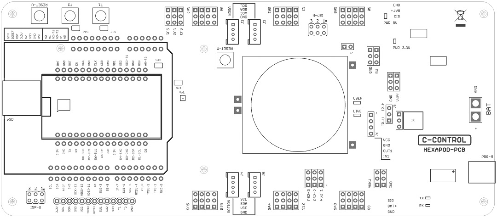

Overview of the connections and components¶

Figure 79
Lay down the robot board as shown in the illustration to get an overview of the connector options.
→ You can also find the circuit diagram for the board at Conrad on the product website.
The Hexapod robot board has the following connectors and components:
| BAT | XT30 connector for connecting the battery that powers the board. Operating voltage 4.5 to 10 V/DC ("+" = positive pole; "GND" = negative pole). Depending on the servos used, a NiMH battery with 5 cells (nominal voltage 6.0 V) and a capacity of at least 2000 mAh should be used as power supply. |
| PRG-M | USB connection for programming the locomotion controller. |
| TX-LED | Indicates the transmission line when a programme is transmitted to the locomotion controller (fast flashing during transmission). |
| Signals the receiving line when a programme is transferred to the locomotion controller (fast flashing during transfer). | |
| AKKU & GND | The battery voltage can be tapped at these pins ("BAT" = positive pole, "GND" = negative pole). !!! Caution !!! The pins are not protected against short circuits! Work carefully here and do not cause a short circuit! This can lead to the destruction of the pins and the Hexapod Robot Board! This connection is available for proper extensions and experiments |
| J6 | Here stabilised 5 V/DC/1000 mA at the pins "VCC" and "GND" are available. This connector is used for proper extensions and experiments ("VCC" = positive pole, "GND" = negative pole). |
| OUT1 | This is a digital output of the locomotion controller. It can be switched to HIGH (+5 V/DC) or LOW (0 V/DC) by a command from the user board. The maximum current carrying capacity is 20 mA. This connection is available for proper extensions and experiments. |
| IN1 | This is a digital input of the locomotion controller. It can read a digital state via a command from the user board. A logical 1 is detected between 3.5 and 5 V/DC; a logical 0 at a voltage lower than 3.3 V/DC. The maximum input voltage of 5 V/DC must not be exceeded! This connection is available for proper extensions and experiments. |
| IR | The infrared receiver "IR" can either be connected with the jumper "J8" with the locomotion controller (jumper position "IR-M") or with the user board (jumper position "IR-U"). The receiver makes it possible to receive a 38 kHz infrared signal, e.g., from a universal remote control or a self-made IR transmitter. |
| LIVE-LED | The blue "LIVE-LED" indicates the status of the locomotion controller. If the locomotion controller is active, this LED flashes in different states. |
| USER-LED | The red "USER LED" indicates that the PS2-compatible gamepad is activated, and the control commands are now ignored by the user board. |
| 3.3V & GND | Stabilised 3.3 V/DC/400 mA are available at these pins. This connector is available for proper extensions and experiments ("3.3V" = positive pole, "GND" = negative pole). |
| 5V & GND | Stabilised 5 V/DC/1000 mA are available at these pins. This connector is available for proper extensions and experiments ("5V" = positive pole, "GND" = negative pole). |
| 3.3V Pwr-LED | The red LED indicates that the 3.3 V voltage/power supply is working. It lights up when a power supply is connected to the BAT connector. |
| 5V PWR-LED | The red LED indicates that the 5 V voltage/power supply is working. It lights up when a power supply is connected to the BAT connector. |
| J7 | The jumper "J7" deactivates the evaluation of the PS2-compatible gamepad in the locomotion controller firmware (the robot can then no longer be controlled via the gamepad). The gamepad control commands can then only be read out via the user board! |
| ISP-M | ISP connector ("in-system programming") of the Locomotion controller. Via this connector the locomotion controller can be programmed via an ISP programming device. It is also possible to use this connector to integrate your own components with SPI interface. |
| PS2-1 - PS2-3 | A PS2-compatible gamepad, available as an accessory, can be connected to these pins. With this controller the robot can be controlled manually, similar to a remote controlled car. |
| J2 & J3 | The two sockets are connected to the I2C-BUS connector of the Locomotion controller and can be used for proper extensions. The connectors are compatible with the "SEEED-GROVE" components. |
| J4 & J5 | The two sockets are connected to the I2C-BUS connector of the user board and can be used for proper extensions. The connectors are compatible with the "SEEED-GROVE" components. |
| RESET-M | The button triggers a hardware reset of the Locomotion controller when pressed. |
| S0 - S17 | The "leg servos" of the Hexapod are connected to these connections. The pin headers are always arranged in blocks, which are assigned to the respective leg. The connections for "Coxa - Hip", "Femur - Thigh" and "Tibia - Shin" are counted from the respective label (S...). The pins are compatible with the most common servos. Make sure the polarity is correct. The polarity is marked on the board with "SIG" for the signal line, "BAT+" for the positive pole and "GND" for the negative pole. |
| SA0 - SA5 | The analogue inputs SA0 to SA5 can be used for proper extensions in the locomotion firmware. In the "Motion Firmware" these can also be queried by the user board via a function. |
| SJ1 | The PCB jumper "SJ1" connects the audio amplifier with the locomotion controller. In most practical cases, this connection remains in place. If necessary, you can carefully cut the jumper with a small wallpaper knife. With a soldering iron and some solder you can re-establish the connection. |
| Loadspeaker | The loudspeaker is used to output the signal tones and is connected to the audio amplifier. The signal tones can be generated by the locomotion controller and also by the user board. |
| Vol. | The trimmer "Vol." is used to adjust the volume of the signal tones of the locomotion controller and the user board. If you turn the trimmer in the direction of the buttons, the volume is increased; in the opposite direction it becomes quieter. In practice, a small watchmaker's screwdriver has been used to adjust the small trimmer. Be careful not to damage the trimmer when adjusting it! The basic setting is the middle position of the trimmer. |
| T1 & T2 | The buttons "T1" and "T2" can be used with the user board. Please take a look at the software examples. |
| SJ6 & SJ7 | The PCB jumpers "SJ6" and "SJ7" connect the outputs of the buttons "T1" and "T2" with a 22 kOhm pull-up resistor, so that no pull-up resistors have to be activated in the user board program. In most practical cases, this connection remains in place. If necessary, you can carefully cut the jumpers with a small wallpaper knife. With a soldering iron and some solder you can re-establish the connection. |
| RESET-U | The "RESET-U" button resets the user board. |
| SJ2 | The PCB jumper "SJ2" connects the button "T2" with the NodeMCU user board. The used pin of the NodeMCU is the analogue input and can be disconnected from the push-button "T2" by this jumper if used otherwise. Normally this connection remains in place. If necessary, you can cut the jumper carefully with a small wallpaper knife. With a soldering iron and some solder you can re-establish the connection. |
| SU1 - SU3 | The connectors SU1, SU2 and SU3 are connected to the user board slots and can be used for proper applications. They have the same polarity as the servo connectors of the leg servos. Please take a look at the software examples. |
| µSD | The card slot for a MicroSD card is connected to the Arduino-UNO compatible user board slot and can be used for own applications. Please take a look at the software examples. |
| ISP-U | ISP port ("In-System Programming") of the Arduino UNO compatible user board slot. This port is used to programme the user board using an ISP programmer. It is also possible to use this connector to integrate your own components with SPI interface. →The Locomotion-Controller is located under the loudspeaker. |